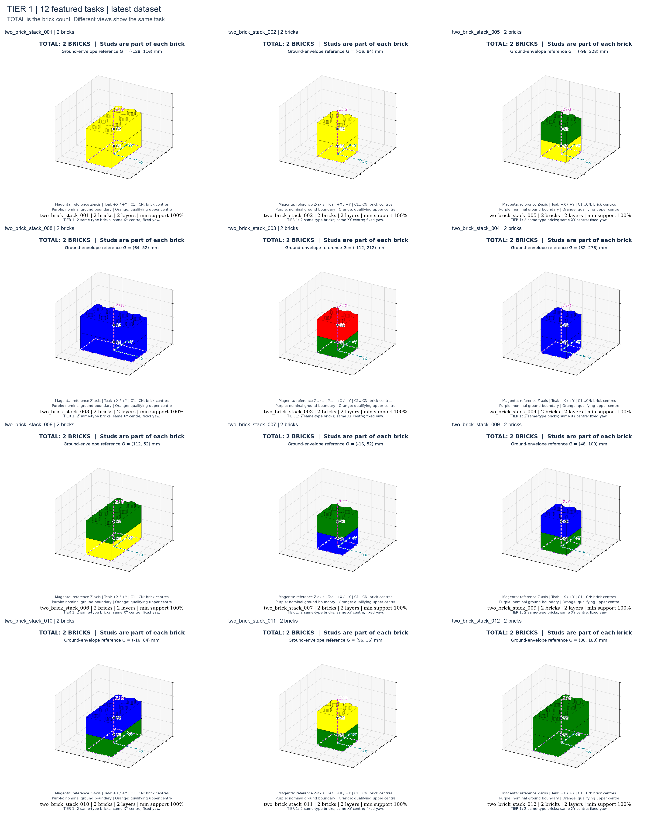
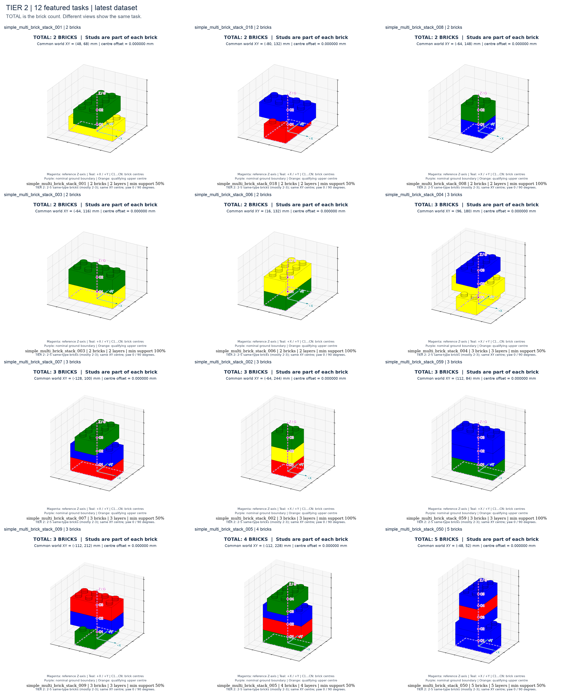
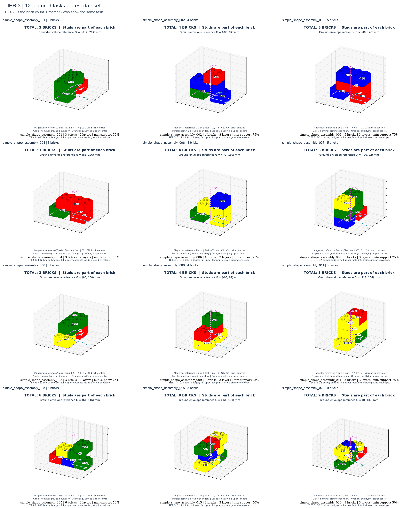
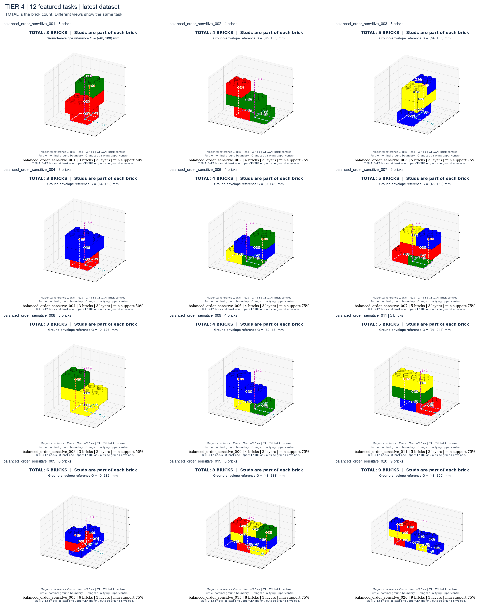

Tier 1
恰好 2 块同砖型，XY 中心相同、朝向固定，逐层垂直堆叠。
四个 Tier 的主示例统一使用 target.png：论文风格固定方位角 -60°、仰角 25°。侧视、分层和中心检查仅作为单独的辅助视图，不替代主示例。
统一图例：洋红 Z 轴 / 俯视十字：底层包络中点 G 的竖直参考轴；紫色虚线：底层整体边界；C1…CN：各砖 XY 中心（3D/侧视中标在砖体半高处）；橙点：Tier 4 满足边界规则的上层中心；青色 X/Y：世界坐标正方向。G 不是重心，也不是每块砖必须达到的位置。初始散件图以料盘中心 P 为参考，不要求散件中心重合。隐藏中心也以检查标注显示。
每个 Tier 提供 12 个精选样例，每例至少 4 张不同视角/阶段的检查图；Tier 4 全部 100 个任务均提供统一三维主视图，并另保留中心边界检查。Tier 2 以 2–3 块为主（完整数据 85%，4–5 块为 15%）；Tier 3/4 以 3–5 块为主（完整数据 80% / 15% / 5%）。凸点不计作额外积木。

恰好 2 块同砖型，XY 中心相同、朝向固定，逐层垂直堆叠。

2–5 块（85% 为 2–3 块）同砖型，每层一块、所有 XY 中心完全一致，朝向仅 0°/90°。长砖交叉时砖体可以伸出底砖；判断重点是中心一致。

3–12 块，多块底层支撑通过上层桥接连接；所有上层砖的整个底面矩形都在底层整体包络内（允许贴边）。中心不要求重合。

3–12 块，至少一块上层砖的 XY 中心落在底层整体包络的边界上或外部。仅砖体伸出而中心仍在内部，不满足此规则。